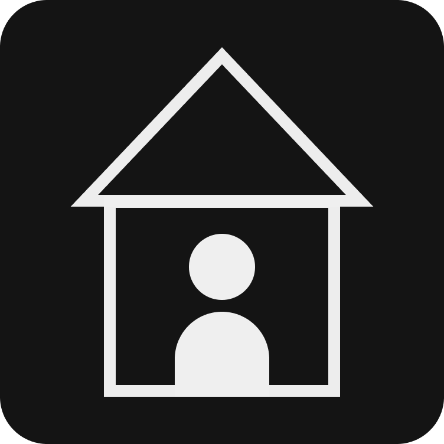
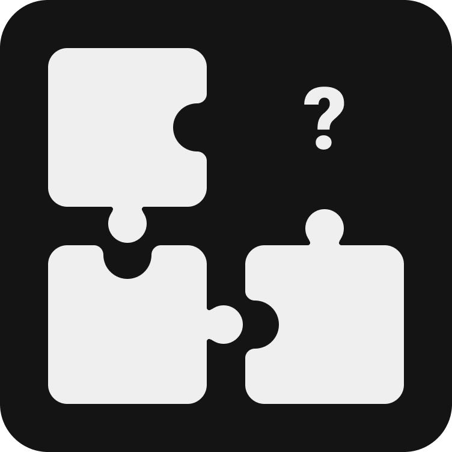

Virtuoso
Case Study
With the severe social impact of the Coronavirus, children were told to complete the school year from the safety of their homes. I looked to build a site that children and teachers could quickly adapt to and continue learning with ease.
View Prototype
Deliverables
User Research
Branding & Identity
Hi-fi Mockups
Working Prototype
Tools
Figma
Invision
problem.
By staying at home and learning online, children were missing out on an important part of the educational experience: socializing. Many users of remote learning complain about feeling isolated.
Most online learning platforms were built to supplement in-classroom learning, not replace it. They simply don’t have enough features.
solution.
Allow students to discuss and share ideas in classroom discussions and assigned groups.
Providing the right features for teachers and students can effectively replace in-classroom learning.
Jump to section
research.
What will my service need?
I conducted a survey on people's experience with remote learning. Here are some of my results:

71% of users said they used a desktop/browser to access remote learning, as opposed to mobile apps.

81% of users agreed that live video calling, pre-recorded lessons, and feedback on work were necessary for a remote learning platform.
When asked about their frustrations, users gave varying answers that fit into 3 distinct categories:
-
No live teacher interface
-

Feeling isolated
-

Lack of structure
What are other services providing?
I researched Google Classroom, Blackboard, and Top Hat, 3 sites that promise to supplement or replace in-person learning. I learned that:
-
These apps mainly targeted universities or higher education.
-
The target audience were school administrators, not teachers or students.
So, I decided to build an app for elementary through high school education with teachers' needs in mind.
information architecture.
Discovering my MVP
I decided on 4 user stories that were high priority in my app. I used these to begin building my minimum viable product.
| As a teacher, | I want to start a class |
| As a teacher, | I want to view attendance |
| As a teacher, | I want to group students up to work together |
| As a student, | I want to view my assigned work |
To help sort my stories, I focused on addressing the frustrations I found in my research. I wanted to create a structured learning environment where students and teachers could interact with each other. I took my high priority stories and mapped out the process behind them.

A first look

-
I looked back at the other remote learning platforms from my competitive analysis to see how they are designed, what works and what doesn’t.
-
Keeping teachers' needs in mind, I included sections for assignments, announcements, and grades.
-
To combat isolation, I created a group feature that allows students to meet and work on projects together.
-
I wanted teachers to be able to customize their classroom pages as much as possible, to help them connect with their students.
branding.
Logo
-
The word “virtuoso” is from the Italian language, meaning learned or skillful.
-
The name sounds a lot like “virtual” for virtual classroom.
-
The shape resembles a V and a person. The person represents everyone who learns through our service.
-
The corners are rounded to make the logo friendlier, to appeal to my younger demographic.
Color and Typography

-
Blue represents trust and security, which are paramount for a service educating children.
-
Orange represents happiness and creativity, both important to foster through education.
-
Open sans and Lato are versatile fonts and look friendly.
-
These colors represent our goal to encourage connection between students and teachers. With current options, students and teachers are feeling more isolated than ever before.
Mockups + Branding

-
This design is meant to look engaging and fun, as well as have intuitive organization that children and teachers could navigate with ease. I wanted to address the needs of all of my users, from young children to adults.
-
Teachers are able to customize their classroom pages and cards to appeal to their students.
-
I used color to attract users eyes to my most important processes, which I outlined my user stories.
testing.
Preference Testing
With branding finished, I began designing the Hi-Fi Mockups. There were a few stages of redesign throughout the process, after receiving feedback from senior designers and completing preference tests. In the first preference test, I examined how to organize the top navigation bar. Which do you like better?

Between these two options, the bottom one won. I believe it won because it is simpler, easier to understand, and takes up less space.
Usability Testing
I gave users 4 tasks to complete on my app. I chose these tasks because they are the most important features that my MVP provides.
-
Check your class schedule
-
Join a new class
-
Submit the assignment that is due today
-
Attend a class’s live virtual classroom
With the results from this testing, I was able to figure out what wasn't working and make some final changes.
Final Changes
-
Change the color of the action button to blue to make it stand out
-
Use a colored bar in naviagtion to show which page the user is currently on
-
Move the "Due Today" alert closer to the top of an assignment and give it a red background
I’m excited about the end result. I believe it can become an effective tool for teachers and students to continue their education in any situation.

further refinements.
I revisited this project and added microinteractions to give my design more life. To do this, I used Figma's "Smart Animate" function. There are a few advantages to including microinteractions in an app. Some apps use them to save time for their users, while others use them to show their branding. I decided to use microinteractions to communicate information and engage users.

-
The twirling plus button was meant to make the design more fun and engaging to use.
-
I added a hover state on each menu option, clearly explaining what each one will do. This was meant to help users find the “Join Class” button, a task they had some trouble with in previous user testing.
-
The plus button moves up to make the “x” of the next window.
-
I would love to add more of these interactions around the app, as I believe it would really attract children’s interest.
conclusion.
I feel confident that Virtuoso could open up possibilities for teachers and students who are currently participating in remote learning. I saw how important user testing is, as it gives me a way to view my project through fresh eyes.
In future projects, I will use user testing earlier in the process, starting with wireframes. This project has reminded me that the design process is not a linear journey, it includes circling back to different stages of research and testing throughout. I am happy with how this turned out and eager to start on my next project!